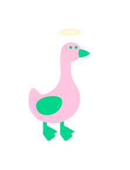

殘忍鵝肝事件

極度血腥、喪心病狂的製作全過程。
-

-
為什麼鵝肝如此殘忍？
鳥類會被關在狹窄的圍欄或籠子裡，金屬籠子會造成腳和腿的傷害，而極度的限制空間對於這些通常好奇敏感的動物而言，更是精神上的痛苦。當鳥八週大時，就會被強制性地持續進食長達四週時間，然後被宰殺。過程中會把長長的金屬管捅進鵝的喉嚨深處，將大量的食物灌入牠們的胃中，這種灌食會導致鳥類的肝臟膨脹至其天然大小的十倍。


組織做了什麼努力？
動物保護協會，提倡抵制吃鵝肝運動。
這導致的法國目前已有4個“綠色”城市的市政府決定把鵝肝醬從他們的節慶招待餐會菜單上刪除掉。
這些保護動物協會的主力是一個以《尊重待動物倫理原則》成立的貝塔協會(Peta)為領頭羊,來發動聖誕年終節慶拒吃鵝肝運動。

我們可以怎麼做？
為了杜絕這些血腥殘殺，請千萬不要食用或購買鵝肝，別為了滿足口腹之慾，間接成為虐待動物的兇手。
鵝肝的生產和消費不僅對動物造成了殘忍的傷害，還對公共健康產生了嚴重影響。
拒絕食用鵝肝，並呼籲身邊的人拒絕食用，政府禁止其生產和銷售，以保護受到折磨的生命。

繼續看其他動物的故事 >>